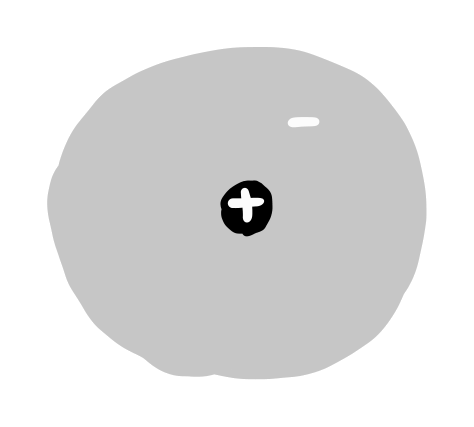
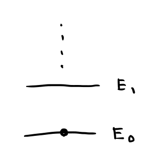
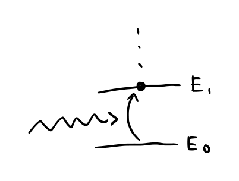
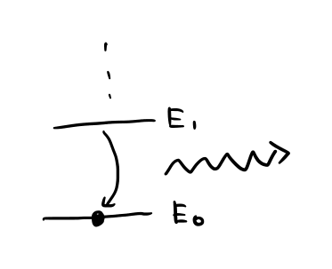
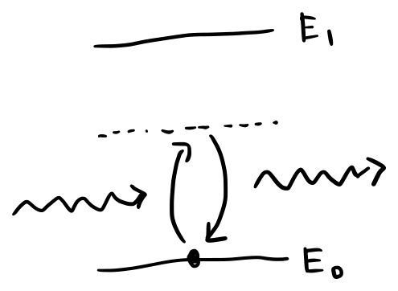
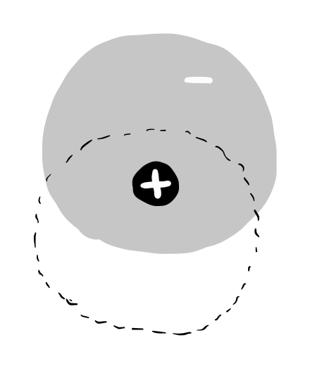

Rendering 方程式や Volume Rendering 方程式で絵を描くとき、物質の屈折率に基づいて光線の経路が決まり、その境界では反射や透過の割合も決まります。 この記事では、原子・分子から出発して、可視光によって誘起される双極子、電気分極、誘電率という粗視化を経由し、屈折率がどこから現れるのかを辿ります。
原子や分子には様々な種類があります。 ここでは最もシンプルな状況として、一個の原子に光が入射する状況を選び、原子と光の相互作用の概要を見ていきます。
光には、空間を波として伝わり、原子と局所的にエネルギーをやりとりする性質があります。 周波数 $\nu$ の光が運ぶエネルギーは最小単位 $h\nu$ を持つことがわかっており、 これは光子と呼ばれています。
原子は、正の電荷の原子核と、負の電荷の電子からできています。
電子は、原子核の作る電気的なポテンシャルである、 クーロンポテンシャルの中で離散的なエネルギー準位に分布します。 これは電子雲と呼ばれています。 外部からエネルギーが与えられないとき、電子は基底状態に落ち着く性質があります。


原子は光子を吸収したり放出したりする性質があります。 そして、光子のエネルギーが、原子のエネルギー準位差に近いかどうかで挙動が違います。
入射光子のエネルギー $h\nu$ が準位差に近いと、 原子は光子を吸収し、そのエネルギーを使って電子が励起します。
電子が励起状態から基底状態へ戻るとき、 エネルギーを光子として放出することがあります。


入射光子のエネルギーが準位差から離れているとき、 原子は光子を一瞬だけ吸収して、すぐ放出します。

仮想励起は、入射光が電子雲を揺らして、 原子に時間的に振動する電気双極子をつくり、 それが電磁波として再放射される過程として記述できます(Kramers-Heisenbergの式)。 この場合、原子は電気双極子として抽象化でき、 物質の光学的性質は電気双極子のパラメータで単純化できます。

そこで次の節では、多数の光子と多数の電気双極子による平均的な振る舞いを、 粗視化して考えます。
多数の光子が多数の電気双極子と相互作用する状況を考えます。 まず、多数の光子の平均的な振る舞いは、 連続的な値をもつ電場 $\bm{E}(\bm{x},t)$ と磁場 $\bm{B}(\bm{x},t)$ で表現します。 そして、原子・分子の代わりに多数の電気双極子で抽象化された物質を媒質と呼びます。
いま可視光を考えていることに基づき、以下の仮定を行います。
電気双極子の平均的な振る舞いについて考えます。 まず、仮定(A1)(A2)のもとで、位置 $\bm{x}$ にある 1 つの双極子に誘起される電気双極子モーメントを $$ \bm{p}(\bm{x},t)=\alpha(\bm{x})\bm{E}(\bm{x},t) \tag{1.1} $$ と書きます。 $\alpha$ は分極率で、原子や分子の電子雲がどれだけ揺れやすいかを表します。
議論を簡単にするために、以下の仮定を置きます。
また、分極率は正の実数とします：
次に、電気双極子の数密度を $N(\bm{x})\,[\mathrm{m^{-3}}]$ と書き、 電気分極 $\bm{P}$ を単位体積あたりの双極子モーメントとして、 $$ \bm{P}(\bm{x},t) := N(\bm{x})\bm{p}(\bm{x},t) = N(\bm{x})\alpha(\bm{x})\bm{E}(\bm{x},t) $$ と定義します。
多数の電気双極子の平均的な応答を表現する、 電気感受率 $\chi_e(\bm{x})$ を導入して $$ \bm{P}(\bm{x},t)=\varepsilon_0\,\chi_e(\bm{x})\,\bm{E}(\bm{x},t) \tag{1.2} $$ と書きます。
先ほどの $\bm{P}=N\alpha\bm{E}$ と見比べると、$\alpha$ と $\chi_e$ は $ \chi_e(\bm{x}) \simeq \frac{N(\bm{x})\,\alpha(\bm{x})}{\varepsilon_0} $ と対応します。 なお、これは希薄な媒質には成立するもので、 高密度な媒質では局所的な電場による補正が必要です。 この点は話の本筋ではないため、詳細には立ち入りません。
電気分極と同様に、磁気双極子モーメント $\bm{m}$ の集まりから磁化 $\bm{M}$ も定義できます。 双極子の数密度を $N(\bm{x})$ とすると、磁化は $\bm{M}(\bm{x},t) := N(\bm{x})\,\bm{m}(\bm{x},t)$ と書けます。 仮定(A4)(非磁性媒質)より、以降は
$$ \bm{M}\simeq 0 \tag{1.3} $$とします。
電気分極 $\bm{P}$ と電場 $\bm{E}$、磁場 $\bm{B}$ の関係は、 物質中の Maxwell 方程式によって決まります。 この節では、物質中の Maxwell 方程式から電磁波の波動方程式を導き、 分極 $\bm{P}$ が屈折率 $n(\bm{x})$ として表されることを確認します。
外部から与えられた電荷や電流がないとき、 物質中の Maxwell 方程式は以下の通り与えられます。
$$ \nabla\times\bm{E}(\bm{x},t)+\frac{\partial\bm{B}(\bm{x},t)}{\partial t} = 0, \tag{1.4} $$ $$ \nabla\times\bm{H}(\bm{x},t)-\frac{\partial\bm{D}(\bm{x},t)}{\partial t} = 0, \tag{1.5} $$ $$ \nabla\cdot\bm{D}(\bm{x},t)=0, \tag{1.6} $$ $$ \nabla\cdot\bm{B}(\bm{x},t)=0. \tag{1.7} $$媒質の性質は、分極 $\bm{P}$ と磁化 $\bm{M}$ を通じて、 以下の補助場 $\bm{D}$、$\bm{H}$ で表現します
$$ \bm{D}(\bm{x},t)=\varepsilon_0\bm{E}(\bm{x},t) + \bm{P}(\bm{x},t),\quad \bm{H}(\bm{x},t)=\frac{1}{\mu_0}\bm{B}(\bm{x},t) - \bm{M}(\bm{x},t) $$(1.3) で非磁性媒質を仮定し $\bm{M}\simeq 0$ としたことから、この記事では
$$ \bm{H}(\bm{x},t) = \frac{1}{\mu_0}\bm{B}(\bm{x},t) \tag{1.8} $$となります。
また、(1.2) で線形媒質を考え $\bm{P}=\varepsilon_0\chi_e\bm{E}$ としたことから
$$ \bm{D}(\bm{x},t)=\varepsilon_0(1+\chi_e)\bm{E}(\bm{x},t) = \varepsilon(\bm{x})\bm{E}(\bm{x},t) \tag{1.9} $$と書けます。 ここで $\varepsilon(\bm{x})$ を誘電率と呼び、 相対誘電率を $\varepsilon_r(\bm{x})=\varepsilon(\bm{x})/\varepsilon_0$ と定義します。
以上の (1.8) (1.9) を構成方程式と呼びます。 物質中のMaxwell方程式と構成方程式により閉じた方程式系が得られたことから、 次は電場と磁場の振る舞いを調べます。
物質中の Maxwell 方程式 (1.4)-(1.7) と構成方程式 (1.8)(1.9) から、電場は次の波動方程式に従います。 導出は付録を参照してください。
$$ \left(\nabla^2 - \mu_0\,\varepsilon(\bm{x})\frac{\partial^2}{\partial t^2}\right)\bm{E}(\bm{x},t) = -\nabla\left(\bm{E}(\bm{x},t)\cdot\frac{\nabla\varepsilon(\bm{x})}{\varepsilon(\bm{x})}\right) \tag{1.10} $$右辺は、誘電率 $\varepsilon({\bm{x}})$ の空間変化による補正項です。 ここで、以下の仮定を行います：
この場合、上式の補正項は無視することができ
$$ \left(\nabla^2-\frac{1}{v^2}\frac{\partial^2}{\partial t^2}\right)\bm{E}(\bm{x},t)=0 \tag{1.11} $$ と書けます。 ここで媒質中の電磁波の位相速度を $$ v(\bm{x}) := \frac{1}{\sqrt{\mu_0\varepsilon(\bm{x})}} \tag{1.12} $$ と定義しました。 すなわち、電磁波は位置に依存する速度 $v(\bm{x})$ で伝搬します。
ただし、媒質の境界面で反射や屈折が起こるときのように $\varepsilon$ が急変する領域では、 式(1.10) の右辺を落とさずに扱います。この点は現時点で深入りせずに進めます。
同様の手続きで磁場 $\bm{H}$ の方程式を求めることができ、 誘電率が光の波長に比べてゆっくり変化する近似のもとで、電磁波の波動方程式は以下のようにまとめられます。
$$ \left(\nabla^2-\frac{1}{v^2}\frac{\partial^2}{\partial t^2}\right)\bm{E}(\bm{x},t) = 0,\quad \left(\nabla^2-\frac{1}{v^2}\frac{\partial^2}{\partial t^2}\right)\bm{H}(\bm{x},t) = 0 $$上式と式(1.4) と (1.5) から、電場と磁場が互いを生成しあいながら 電磁場が空間を進行することがわかります。
媒質が無いところ、 すなわち $\varepsilon(\bm{x})=\varepsilon_0$ のところの電磁波の位相速度を 真空中の光速と呼び、 $$ c:=\frac{1}{\sqrt{\mu_0\varepsilon_0}}=299,792,458\,\text{m}/\text{s} $$ と定義します。
真空中の光速 $c$ と、媒質中の位相速度 $v(\bm{x})$ の比 $$ n(\bm{x}):=\frac{c}{v(\bm{x})} \tag{1.13} $$ を屈折率と定義します。
式 (1.12) と (1.13) から $$ n(\bm{x}) = \sqrt{\frac{\varepsilon(\bm{x})}{\varepsilon_0}} = \sqrt{\varepsilon_r(\bm{x})} $$ となります。 損失なしを仮定して分極率を正の実数としたことを引き継ぎ、 ここで定義した屈折率も正の実数です。
上式から、$\varepsilon > \varepsilon_0$ であるところは、 媒質中の位相速度は真空中の光速に比べて遅くなります。 これは、媒質へ入射する光と、電気双極子から2次的に放射された散乱項が干渉することで起きるのですが、 この記事では深く触れずに進みます。
この記事では、まず双極子近似と線形応答のもとで、原子・分子の応答を誘起双極子モーメント 式(1.1) として表しました。 次に (1.2) で多数の双極子による粗視化から電気分極 $\bm{P}$ を導入し、 さらに (1.3) で非磁性媒質を仮定すると、 構成方程式 (1.8) (1.9) が得られることを確認しました。 これらを Maxwell 方程式 (1.4)-(1.7)と組み合わせることで、 仮定(A8)(短波長近似)のもとで、電磁波の波動方程式 (1.11)が導かれます。 このとき物質中の電磁波の位相速度 $v$ を用いると、(1.13) で屈折率 $n=c/v$、 すなわち $n=\sqrt{\varepsilon/\varepsilon_0}=\sqrt{\varepsilon_r}$ が得られ、 可視光に対する媒質の応答は屈折率分布 $n(\bm{x})$ として粗視化されることがわかりました。
次の記事では、この $n(\bm{x})$ が与えられたときに、波動方程式（式(1.11)）で記述される電磁波が光線へと粗視化される流れを辿ります。
続き: 電磁波から光線
1.3.3節で用いた電場の波動方程式 (1.10) を導きます。 式 (1.4) に回転 $\nabla\times$ を作用させると、
$$ \nabla\times\nabla\times\bm{E} =-\frac{\partial}{\partial t}\left(\nabla\times\bm{B}\right) \tag{1.14} $$が得られます。 右辺の $\nabla\times\bm{B}$ を 式 (1.8) と (1.5)、(1.9) を用いて書き換えると
$$ \nabla\times\bm{B} =\mu_0\nabla\times\bm{H} =\mu_0\frac{\partial\bm{D}}{\partial t} =\mu_0\frac{\partial}{\partial t}\left(\varepsilon(\bm{x})\bm{E}\right) =\mu_0\varepsilon(\bm{x})\,\frac{\partial\bm{E}}{\partial t} $$となります。このとき $\varepsilon(\bm{x})$ が時間変化しないことを使いました。 これを式 (1.14) に代入すると、
$$ \nabla\times\nabla\times\bm{E} =-\mu_0\varepsilon(\bm{x})\,\frac{\partial^2\bm{E}}{\partial t^2} $$が得られます。 ここで公式 $\nabla\times\nabla\times\bm{E}=\nabla(\nabla\cdot\bm{E})-\nabla^2\bm{E}$ を用いると、
$$ \nabla^2\bm{E}-\mu_0\varepsilon(\bm{x})\,\frac{\partial^2\bm{E}}{\partial t^2} =\nabla(\nabla\cdot\bm{E}) \tag{1.15} $$と書けます。 残る $\nabla\cdot\bm{E}$ は式 (1.6) と (1.9) から求めます。 $\bm{D}=\varepsilon\bm{E}$ より、
$$ 0=\nabla\cdot\bm{D} =\nabla\cdot(\varepsilon\bm{E}) =\varepsilon(\nabla\cdot\bm{E})+(\nabla\varepsilon)\cdot\bm{E} \quad\Leftrightarrow\quad \nabla\cdot\bm{E} =-\bm{E}\cdot\frac{\nabla\varepsilon}{\varepsilon} $$となります。 これを式 (1.15) に代入して整理すると、
$$ \left(\nabla^2 - \mu_0\,\varepsilon(\bm{x})\frac{\partial^2}{\partial t^2}\right)\bm{E}(\bm{x},t) = -\nabla\left(\bm{E}(\bm{x},t)\cdot\frac{\nabla\varepsilon(\bm{x})}{\varepsilon(\bm{x})}\right) $$と、式 (1.10) が得られます。
2026. ishiyama